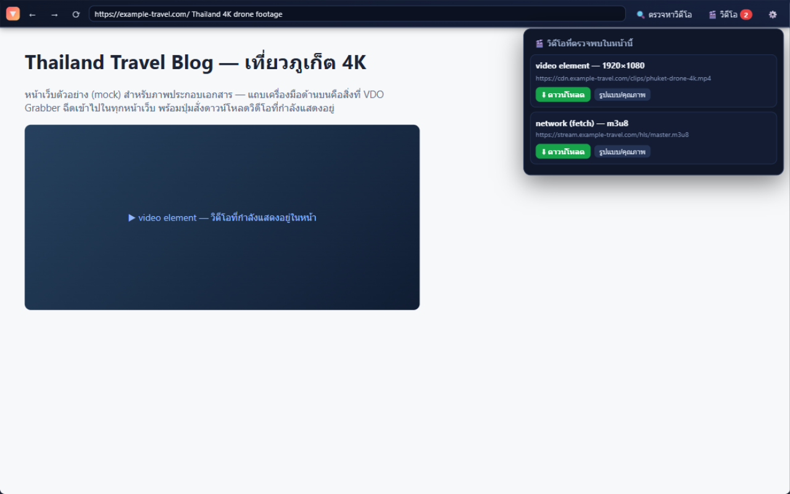
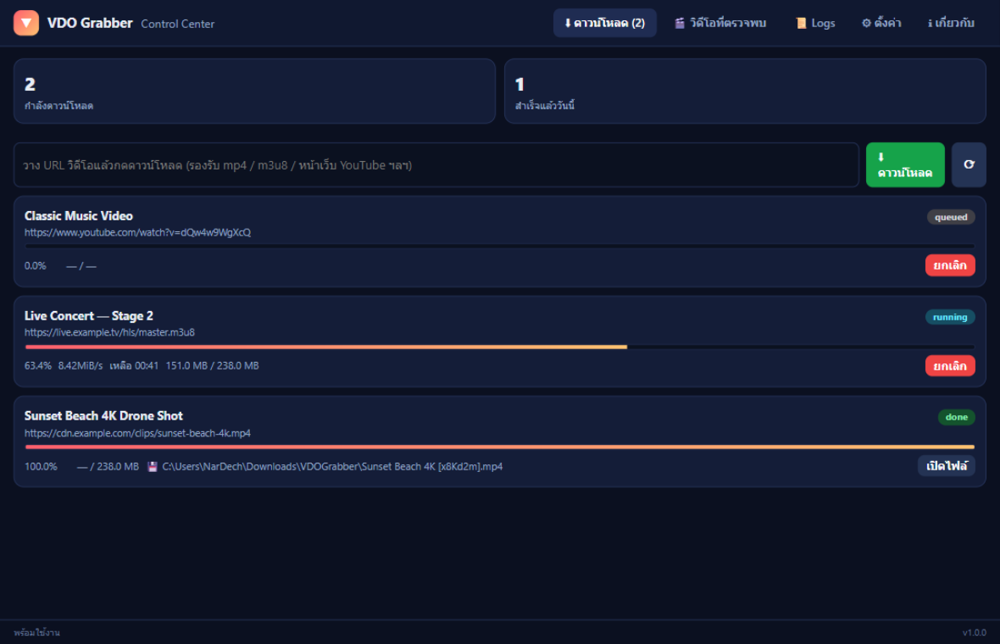
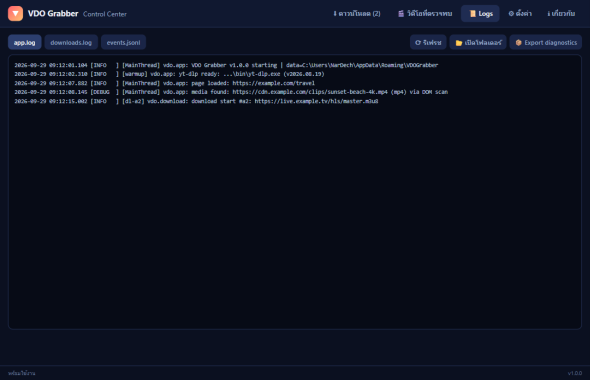
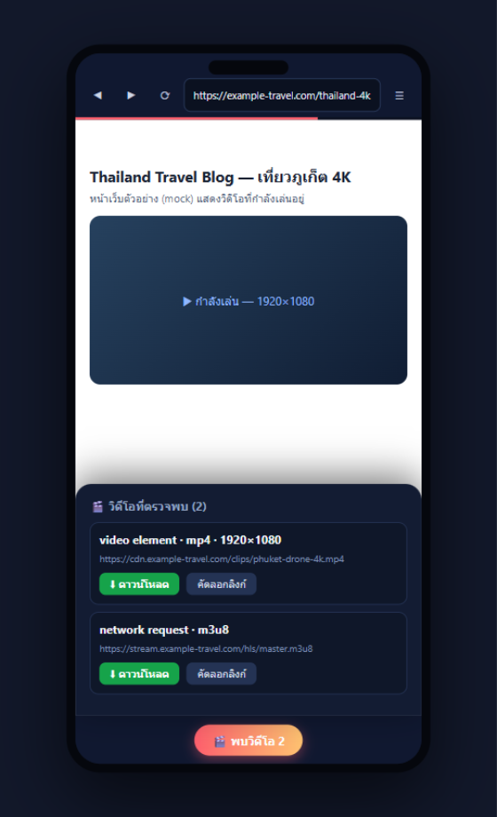
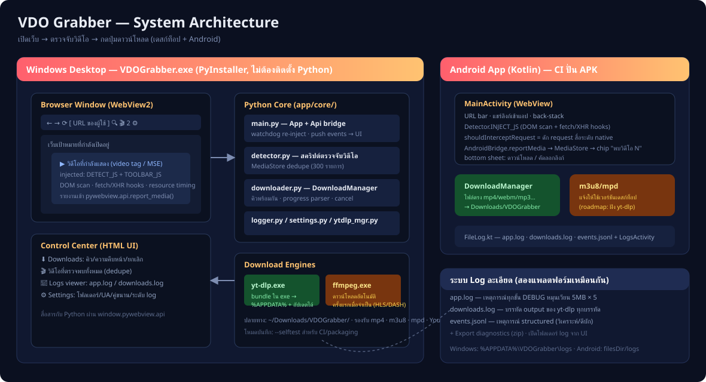

VDO Grabber ออกแบบจากการวิเคราะห์ส่วนขยาย "Video Download Helper" — มาพร้อมเบราว์เซอร์ในตัว, ตรวจจับวิดีโอ 3 ชั้น, เอนจิน yt-dlp + ffmpeg และระบบ log ละเอียดสำหรับดีบัก ทั้งไฟล์ exe เดียวบน Windows และแอป Android
พิมพ์ URL ได้เลย แอปฉีดแถบเครื่องมือของตัวเองไว้บนทุกหน้าเว็บ (Shadow DOM แยกสไตล์จากเว็บ) พร้อมปุ่มย้อน/ไป/รีโหลด/ค้นหา
สามชั้นพร้อมกัน: scan แท็ก <video> · hook fetch/XHR
จับ .m3u8/.mpd/.mp4 · อ่าน performance resource-timing — เทคนิคเดียวกับส่วนขยายต้นแบบ
เลือก "ดาวน์โหลดอัตโนมัติ (ดีที่สุด)" หรือกด "รูปแบบ/คุณภาพ" เพื่อเลือกความละเอียด/ขนาดไฟล์จริงจากข้อมูลของ yt-dlp
app.log (หมุนเวียน 5MB×5) ·
downloads.log (output ของ yt-dlp ทุกบรรทัด) · events.jsonl (structured)
ดูย้อนได้ในแอป + ส่งออก diagnostics เป็น zip





VDOGrabber-<เวอร์ชัน>-windows-x64.exe — ดับเบิลคลิกใช้ได้เลย ไม่ต้องติดตั้ง Python (ต้องมี WebView2 Runtime ซึ่งมีในตัว Windows 10/11)VDOGrabber-<เวอร์ชัน>-android.apk — ติดตั้งแบบ "อนุญาตแหล่งที่ไม่รู้จัก" ตามปกติcertutil -hashfile VDOGrabber.exe SHA256 แล้วเทียบกับ checksum บนหน้าดาวน์โหลดDownloads\VDOGrabber# Windows Desktop
pip install -r requirements.txt
python app/main.py # รันจากซอร์ส
python app/main.py --selftest # ทดสอบ headless: engine + detection + ดาวน์โหลดจริง
python scripts/make_icon.py # สร้างไอคอน (Pillow)
python scripts/build_exe.py # แพ็ก dist/VDOGrabber.exe
# Android (หรือใช้ GitHub Actions ปั่นให้อัตโนมัติ)
cd android && ./gradlew assembleDebugโครงสร้าง repo: app/ เดสก์ท็อป · android/ แอป Kotlin ·
docs/ เอกสาร+หน้าเว็บ · scripts/ เครื่องมือ build · code/ ต้นแบบศึกษา (ไม่ publish)
โปรดใช้ตามกฎหมายลิขสิทธิ์ของเนื้อหาที่ดาวน์โหลด · ซอร์สโค้ด MIT